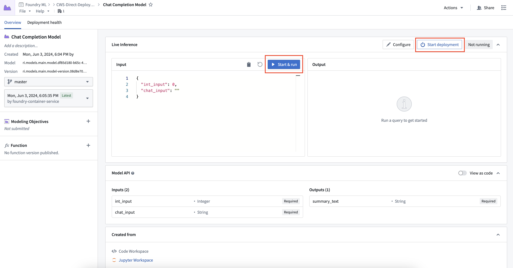
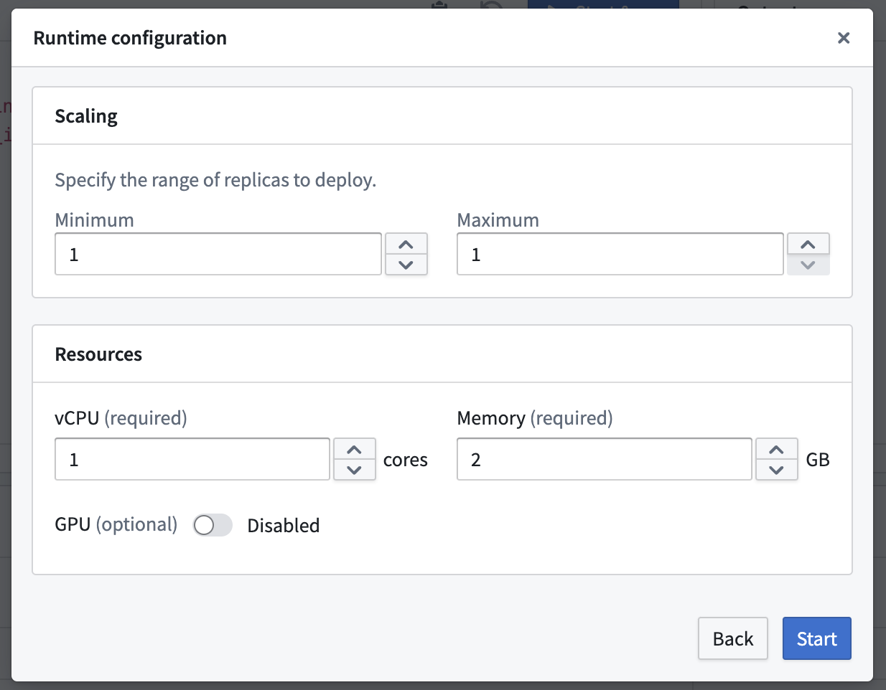
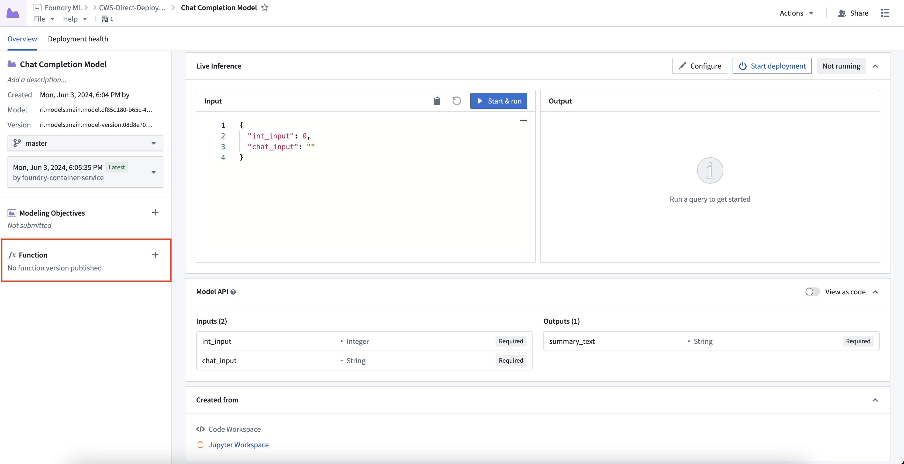
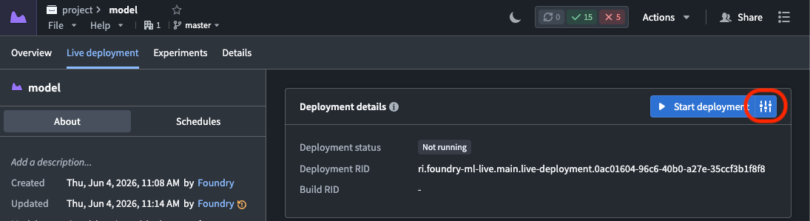
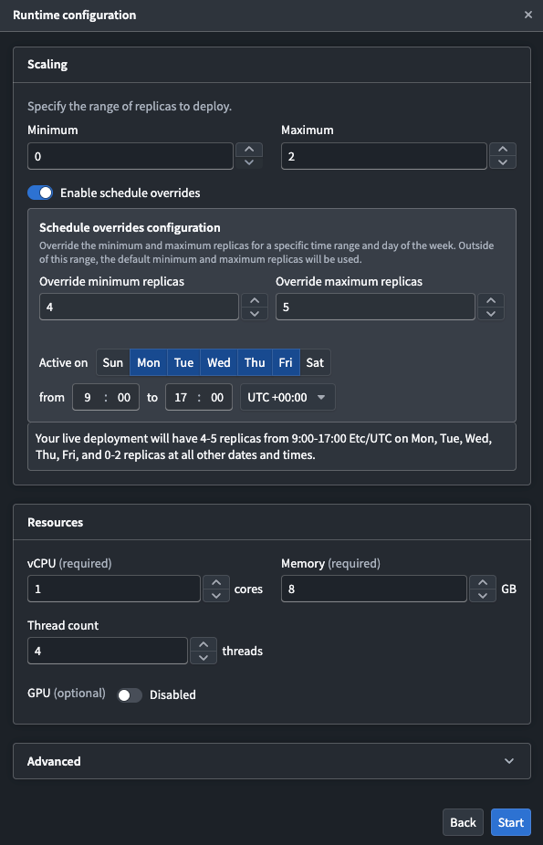
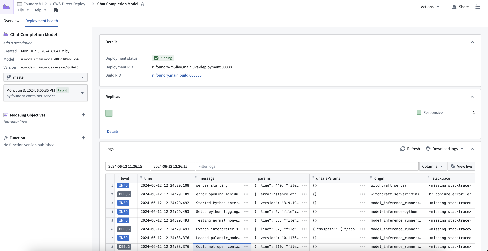
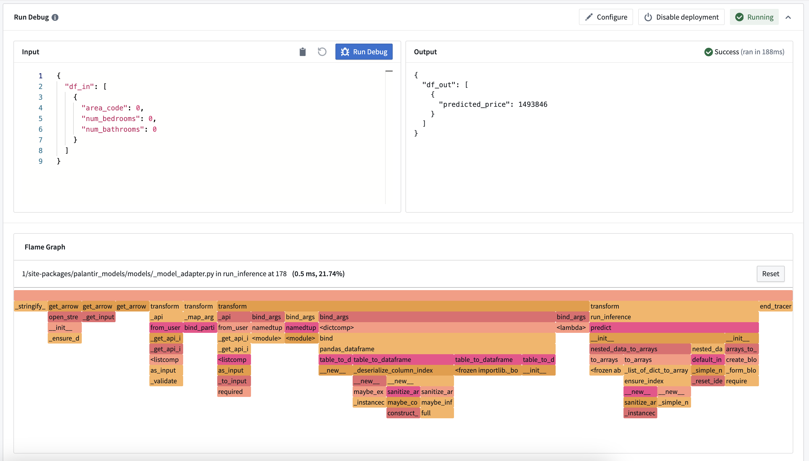

Direct model deployments are live hosted endpoints that immediately connect models to user applications such as Workshop and Slate. Direct model deployments are queried in TypeScript through Functions on models or from an external system through a REST API call.
The following sections explain how to create, configure, and publish a direct model deployment and describe some debugging steps and feature considerations to review before getting started.
To create and start a direct model deployment, navigate to the model. Select Start Deployment at the top of a model page under Live Inference. Once running, you can interactively test the deployment by selecting Run.

To configure the resources of a direct model deployment, select the Configure button in the top right of the Live Inference panel. Direct model deployments can be configured to scale from zero. When the deployment reaches 75% capacity, it will create an additional replica until it reaches the maximum replica count specified in the runtime scaling configuration. This also allows deployments to automatically scale down after 30 minutes without a live request.

You can publish a function for the model, enabling usage of models for live inference in Workshop, Vertex, and other end-user applications.
To publish a function, select the + icon in the model artifact sidebar and provide a function name. You can register one function per branch. This creates a wrapper function with the same input and output API as your model, which can be imported and called from a functions repository to add custom business logic.

For details on function behavior, version upgrades, and configuration options, see the Model functions developer guide.
One direct model deployment can be created for each branch of a model. When a new model version is published to that branch, the direct model deployment will automatically upgrade to the new endpoint with no downtime. If you do not want automatic upgrades, consider using a Modeling Objective live deployment and review the differences between a live and a direct deployment described below. If a function was created for the deployment, a new version will automatically be created.
Direct model deployments are backed by compute modules and therefore support automatic horizontal scaling between a user-specified minimum and maximum replica range, as detailed above. Modeling Objective live deployments also support configuring a minimum and maximum replica range to automatically scale based on request volume, as described in the resource configuration section.
You can schedule overrides for your minimum and maximum replica configuration on specific days and times during the week. This is useful when you expect predictable changes, such as higher traffic during business hours or reduced load on weekends.
To configure a schedule override:


The default replica configuration applies outside of the configured time periods. Currently, you can only schedule one override.
Direct model deployments enforce type safety for all inference requests to ensure the model API type matches the input type. Type safety is respected for all input types, particularly the following:
int, and a value of 3.6 is passed to the model, the 0.6 will be truncated and the input will be 3.predict() method. Timestamp fields now expect a string with format ISO 8601.:::callout{theme="neutral"} Model type safety is different from live modeling deployments which do not currently support type casting. :::
To view debugging information and logs for your direct model deployment, select the Deployment health tab at the top of the model page. Here you can find the deployment's running build, health information about replicas, logs, and metrics about each replica's state.

You can also view the call stack of your model inference under the Run Debug card. This allows you to see how long each python function took and where performance improvements can be made.
Note: This does not show the call stack in container models, or if an error is thrown during inference.

The available features of direct model deployments differ from features of Modeling Objective live deployments. Review the table below for more details.
| Feature | Direct model deployment | Modeling Objective live deployment |
|---|---|---|
| Automatic upgrades | Yes | No |
| Automatic scaling | Yes | Yes |
| Type safety | Yes | No |
| Scheduled overrides | Yes | No |
| Supported endpoints | Yes (V2 only) | Yes (both V1 and V2) |
| Model inference history | No | Yes |
| Pre-release review | No | Yes |
| Automatic model evaluation | No | Yes |
| Trained in Code Repositories | Yes | Yes |
| Trained in Code Workspaces | Yes | Yes |
| Supports container images | Yes | Yes |
| Supports externally-hosted models | No | Yes |
| Spark model adapter API type | No | Yes |
| Marketplace support | No | No |